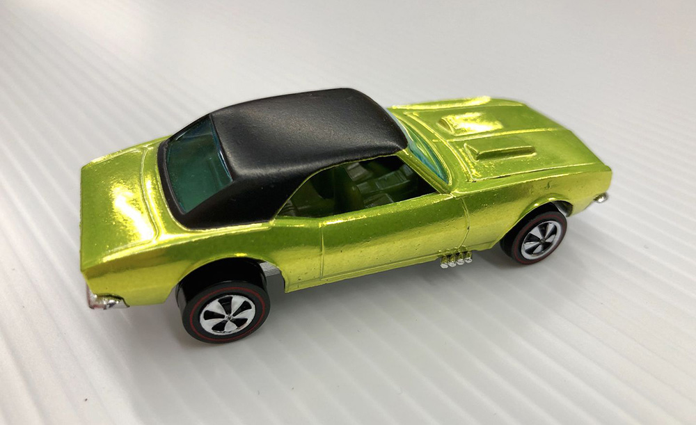
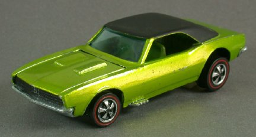

|
Hot Wheels top 2: Over Chrome Camaro (1968) |
|
|
TOP 2: Over Chrome Camaro (1968).
Este es un raro Camaro sobre cromo utilizado con fines publicitarios. Hecho de la misma manera que un adorno navideño, el Camaro apareció en comerciales con valores de producción más altos, y solo se sabe que existen 20 autos Hot Wheels con este acabado especial. Valor: $ 25,000 sueltos   |
||